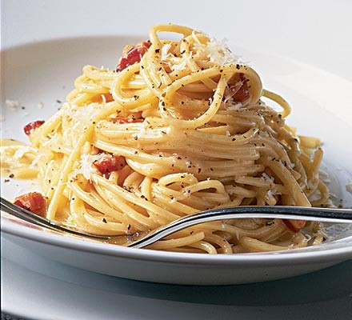

Carbonara

Description
My girlfriend loves this dish, it flatters me a bit to be honest. I will teach you have to make this Italian-cuisine classic like a pro.
Ingredients
- 250 grams of Spaghetti
- Pecorino Romano cheese (I like to use Parmigiano. I know, heresy.)
- Guanciale (A generous slice for one portion, in this case two slices.)
- 4 eggs - preferably from a good source, as they will not be thoroughly cooked. However, I never had a problem with the classic store-bought ones.
- Salt
- Black Pepper
Steps
- Cook the spaghetti in boiled salted water. If you are doing this for the first time, I recommend first preparing everything else.
- While cooking, cut up the guanciale and throw on the pan. Medium heat. Cook until it´s crunchy.
- Crack the eggs open into a bowl, add shredded Pecorino cheese (generous amount) and black pepper (careful with that). Stir until you have a creamy sauce.
- Remove the guanciale from the pan, leaving only its oil. Throw the cooked spaghetti on the pan on the lowest heat.
- Now, turn off the heat and pour the egg cream over the spaghetti. The remaining heat from the pan and spaghetti should make it into a nice substance, not scrambled eggs.
- Stir well, add the guanciale on top and you are done.